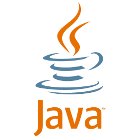
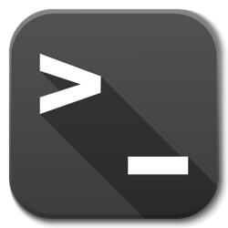
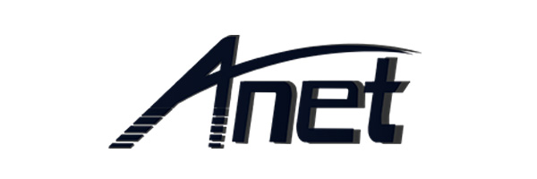

About Patrick
I grew up in the small town of Elkview, WV. Growing up in a small, rural community possed a few issues for someone interested in computers such as myself. The first being that the area that I lived in did not recieve high speed internet until January of 2015. Up to that point, the only options were either dialup or satalite internet, neither of which were desireable. Although I had limited access to the bountify resources the internet provides, I found ways to learn what I wanted. In high school, I would spend my lunch time in the computer lab learning to program or obtaining the newest copy of Ubuntu. By the time I made it to college, I was profficient in the use of Linux and capable of programming in Python. The struggles inherent trying to learn up to date information with limited access to that information gave me strong self teaching skills and the resolve to use them.
These skills were very useful during my time at Marshall University, they enabled me to succeed in my various research endeavours that I undertook. I was able to teach myself to automate the management of multiple Ubuntu servers using shell scripts simulatneously, develop a wireless sensor network for flood detection and environmental monitoring, and develop a data storage framework for semicondutor nano-crystals. I hope to continue such endeavours beyond graduation and work with an industry leader who is driving innovation and technology into the future.
Skills
I have a wide range of programming skills, everything from Linux server automation through shell scripting, to web development, to wireless sensor networks. Below are lists of languages, frameworks, and tools that I use most frequently.
Programming Languages
- Python

- Java 
- Shell Script 
- Arduino

- Micro Python

- C++

- Ruby
- HTML

- CSS, SCSS

- JavaScript

Libraries and Frameworks
- Flask

- SciKit-Learn

- Ruby on Rails

- Bootstrap

Tools
- Doxygen

- Sphinx
- Maven

- Gradle

- Platform IO
- GitLab Runner

- Jetbrains IDEs
Server Administration
- Ubuntu Server

- Apache Web Server
- Mosquitto MQTT Server

- Open SSH
IoT Platforms
- Raspberry Pi

- Arduino
- ESP8266
3D Printing Software and Platforms
- FreeCAD
- Cura

- Astroprint
- Anet A8 
- Makerbot Replicator 2
Education
College
I enrolled at Marshall University in 2015 and am projected to graduate as part of the class of 2019 with a Bachelor of Science in Computer Science.
Research Programs
- REU-INCLUSION at the University of Illinois at Urbana-Champaign’s National Center for Supercomputing Applications (NCSA) Summer 2018.
Research Grants
Scholarships
- West Virginia Promise Scholarship
- Laidley Scholarship
- Willis Scholarship
- American Red Cross Scholarship
Academic Honors
- Dean's List, Fall 2017
- Dean's List, Spring 2017
- Dean's List, Fall 2016
- Dean's List, Spring 2016
- Dean's List, Fall 2015
Awards
- Letter of Recognition from the Nation Center for Supercomputing Applications
- Outstanding Freshmen in Computer Science
Extracurricular Activities
- Geeks and Gadgets (Founder and former President)
- John Marshall Emerging Leaders Institute (JMELI)
- Pottery Club
High School
I attended Herbert Hoover High School in Clendenin, WV. I attended Hoover from 2011 until I graduated in 2015.
Academic Honors
- Graduated Highest Honors with a 4.52 GPA
- Graduated 4th in class
- Named most likely to succeed by the Class of 2015
- Named Student of the Month numerous times
- Graduated as an AP Scholar for completing 3 Advanced Placement Tests
- Recieved recognition for completing over 500 hours of community service
Extracurricular Activities
- Yearbook Photographer 2013 - 2015
- Archery Team 2012 - 2015
- Miscelanious Computer Repair/Trouble Shooting
- United States Civil Air Patrol
- Air Force Junior Office Reserve Training Corps (AFJROTC)
Hobbies
For the most part, my hobbies include just building and tinkering with things. In my free time, I like to design 3D models that I might find useful to have around, like tool holders and such. In fact, when I first got my 3D printer, the first things I printed were upgrade parts for the printer. I do a lot with home automation as well, so I end up designing and building various sensors and enclosures for said sensors that I can include in my home automation setup. If it involves an Arduino or Raspberry Pi, I probably mess with it for fun.
My other less technical hobbies revolve mostly around art and nature. I really enjoy digital photography, so when it's nice outside I usualy take my camera out and go for a walk. I love taking landscape images of both nature and cities. I also enjoy taking macros, the Raspberry Pi on the home page is actually a picture of mine. I appriciate the interesting perspectives and angles photography can provide. I occasionally keep house plants when my cat lets me. I used to have a beautiful lucky bamoo and some bonsai trees, but the cat had other plans. Hopefully in the future I will be able to have those types of plants again. In the mean time, I will just have to be happy with aquascaping in my fish tank where (hopefully) she can't reach the plants. You can find some pictures of my fish tank, former plants, and some of my photos below if you're interested!
My Fish Tank and Bonsai


My 3 Favorite Pictures I've Taken